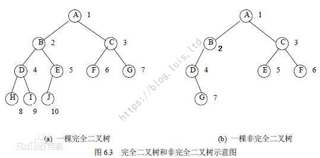

JVM内存模型和内存分区
前言：Java 和 Android 面试中，堆、栈、JVM 内存模型等几乎是必问题，但其实平时口头上，对堆、栈、堆栈、堆区、栈区、内存模型等等的概念是混淆的，因此专门用一篇文章来记录总结。
1. 堆、栈和队列
首先需要明确的是，堆、栈、队列是数据结构，堆是一种优先队列，可以采用二叉树实现；栈是一种线性表，其特点是：后进先出（Last In First Out，LIFO）；队列也是一种线性表，其特点是：先进先出（First In First Out，FIFO）。
1.1 堆（Heap）
堆（Heap）总是一颗完全二叉树，且某个节点的值总是不大于或不小于父节点的值。若某节点总是不大于父节点的值（即父节点大于等于子节点），称为最大堆或大根堆（Max Heap）；反之称为最小堆或小根堆（Min Heap）。常见的堆有：二叉堆、斐波那契堆等。
@注：完全二叉树可以这么理解：如果有一棵二叉树，只有最末端的节点可以有 0、1、2 个子节点，倒数第二层的节点要么没有子节点，要么必须有 2 个子节点，并且末端的节点都集中在左侧若干位置上，则该树称为完全二叉树。完全二叉树如下图所示：

完全二叉树的详细解释可参考：《百度百科——完全二叉树》 或 《完美二叉树, 完全二叉树和完满二叉树》。
1.2 栈（Stack）
栈（Stack）是一种运算受限的线性表，其限制在于：仅允许从表的一端进行插入和删除操作。插入到栈中（入栈）的操作叫压栈（Push），从栈中删除（出栈）的操作叫弹出（Pop）。后入栈的数据先出栈（LIFO），类似于枪械弹匣，最后一颗压进弹匣的子弹在最上面，是第一发被打出去的。
1.3 队列（Queue）
队列（Queue）和栈类似，都是线性表，不同的是数据存取的顺序。队列中插入数据和取出数据分别在表的两端，且先插入的数据最先被取出。
2. JVM内存模型
首先需要强调一点：JVM 的内存模型和 JVM 的内存分区（内存结构）不是一回事！
JVM 内存模型描述了 Java 程序各类型变量的访问规则，以及在 JVM 中将变量从内存中存储或读取的底层标准。
JVM 内存模型有两个重要准则：
所有的变量都存储在主内存中。
每个线程都有自己的工作内存，里面保存了该线程使用到的变量在主内存中的一个副本。
并且 JVM 的内存模型还规定：
线程对共享变量的所有操作都必须在自己的工作内存中进行，不能直接从主内存中读写。
不同线程之间无法访问其他线程工作内存中的变量，线程间变量值的传递需要通过主内存来完成。
为了在多个线程访问同一个共享变量时，能保证共享变量具有实时性，JVM 内存模型还遵循：缓存一致性协议。该协议规定，如果一个线程将共享变量回写进主内存，该动作会导致其他线程中的该共享变量的 Cache 失效，但线程在修改完一个共享变量时，并不一定会马上将其回写进主内存，而 volatile 修饰符即是用来声明，一个变量在被修改（写入）后，立即回写进主内存，并更新到其他线程中。
可参考：什么是Java内存模型
3. JVM中的5个区
在 JDK 1.8（不含）之前，JVM 的内存分为 5 个区：堆区、栈区、方法区、本地方法区、程序计数器。
堆区（Heap）和栈区（Stack）是内存模型，虽然英文一样，而且也常常被简称为堆和栈，但实际上他们和数据结构中的堆、栈是完全不一样的概念，底层也并不是直接使用数据结构中的堆和栈的存储方式来实现，只是比较类似。
堆区是存储的单位，而栈区是运行时的单位。通俗地说：堆区解决程序数据存储的问题，负责管理数据怎么放、放在哪；而栈区解决程序运行的问题，负责管理程序怎么运行、怎么处理堆中的数据。
3.1 堆区（Heap Area）
堆区通常和进程相关，进程建立初始化时会分配默认堆区，运行过程中也可以申请额外的堆区空间，但在需要手动释放，否则会导致内存泄漏，未释放的内存在进程结束时由 OS 回收。堆区分为全局堆和局部堆，全局堆就是所有未分配的堆区空间，局部堆则是用户分配的堆区空间。多个线程可以访问同一个堆区，当然也可以申请额外的堆区空间。
在 Android 中，堆是 Dalvik 的内存数据区，用于存储：对象实例数据、方法内部的复杂类型变量、动态属性。
- （1）对象实例数据：包括对象实例的属性、属性类型、对象本身的类型标记等，但是并不会保存对象实例的方法（类方法），实例方法属于数据指令，保存在方法区中。
- （2）方法内部的复杂类型变量：例如方法内使用了自定义类的实例对象等。
- （3）动态属性：没有使用
static修饰的类成员属性，因为这些属性可能是自定义类的实例对象，这些对象的内存大小是不可预估、动态变化的。需要注意的是，类成员的基本数据类型，也是存放在堆中。
堆区的内存是不连续且无序的，分配和释放内存的成本都比较高。例如在分配堆内存时，可能需要在堆区搜索多个空间，如果内存碎片（多次分配和释放后，会造成占用内存和可用内存互相掺杂）太多，则会消耗较长时间来搜索可用内存区，甚至需要向 OS 申请分配新的堆区空间，因此堆区的效率较低，但是内存分配更加自由，内存的分配和释放可以手动控制。
@注：实际上，如果 JVM 开启了 逃逸分析（Escape Analysis），会在满足一定条件时，将本应存在堆区中的变量存在栈区，便于内存的释放。例如：
1 | public void demoFun() { |
本来，demoClass.demoData 虽然是基本数据类型 int，但由于它是一个类成员动态属性，因此随所属对象 demoClass 被分配在堆区。如果 JVM 开启了逃逸分析，则优化后会将该段代码转换为如下的形式运行：
1 | public void demoFun() { |
这样就将 demoData 存在了栈区，提高了内存分配和回收的效率。但是逃逸分析优化有一定的前提：原本存在堆区的对象，仅在方法体内部有效。如果该对象与方法体外部有交互（即逃逸），则不会优化。例如：
1 | public int demoFun() { |
另外，堆区本身又有 3 个区域划分：新生代（Young Generation）、老年代（Old Generation）、永久代（Permanent Generation）。
（1）新生代：所有新生成的对象都在新生代，新生代的目标就是尽可能快速的收集生命周期短的对象。新生代又分为三个区（通常是两个 Survivor 区，但也可以增加）：Eden 区，Survivor 1 区，Survivor 2 区。
- Eden 区：大部分对象在 Eden 区生成，当 Eden 区满了 GC 后存活下来的对象将随机复制到其中一个 Survivor 区。
- Survivor区：当一个 Survivor 区满了 GC 后存活下来的对象，如果是来自 Eden 区，则复制到另一个 Survivor 区，如果是来自另一个 Survivor 区，则复制到老年代。
通俗地说，如果一个对象首先在 Eden 区中被创建，Eden 经过 GC 后存活，则被复制到其中一个 Survivor 区，如果这个 Survivor 经过 GC 后还存活，则被复制到另一个 Survivor 区，如果另一个 Survivor 区经过 GC 后仍然存活，则复制到老年代。需要注意的是：两个 Survivor 区是平等的，没有优先级高低、顺序前后之分，都有可能接收来自 Eden 或另一个 Survivor 区传来的对象。Survivor 区可以手动配置为多于 2 个，即可增加对象在新生代中的时间，减小被复制到老年代的可能性。
（2）老年代：在新生代中经过 N 次（N 即为新生代中区的数量）GC 后仍然存活的对象将进入老年代，通常都是生命周期比较长的对象。
（3）永久代：一般用来存放类的信息（包括类名、类方法、字段信息等）、静态变量、常量池等不会改变的数据，但在 JDK 1.8 开始就使用元数据区取代了了永久代。
3.2 栈区（Stack Area）
栈区和线程相关，每个线程有自己独立的栈区且不共享，因此栈区是线程安全的。OS 在切换线程时会自动切换栈区（即切换 SS / ESP 寄存器）。栈区内存不需要手动分配和释放。
在 Android 中，栈是 Dalvik 的内存指令区，用于存储：基本数据类型、方法内部的简单类型变量、对象地址。
- （1）基本数据类型：包括 byte，short，int，long，float，double，char，boolean，需要注意的是，直接在类成员变量中声明的基本数据类型属性，依然随对象实例一起存放在堆中。
- （2）方法内部的简单类型变量：例如基本数据类型。
- （3）对象地址：通常大多数对象都会存在堆区中，而把对象的引用（即对应在堆中的地址）存在栈区，当调用一个对象时，就可以快速地从栈区找到该对象的引用，并通过引用找到堆区中的实例。
栈区存放的是多个栈帧，每个栈帧对应了可以被线程调用的一个方法，栈帧中包括：局部变量表（Local Variables）、操作数栈（Operand Stack）、指向当前方法所属类的运行时常量池的引用（Reference to Runtime Constant Pool，当方法内有 String 类型变量时，用于查询常量池中是否已经存在常量）、方法返回地址（Return Address）、以及一些额外的附加信息。当线程执行一个方法时，就会创建对应的栈帧，并将其压栈。方法执行完毕后即弹出。因此，线程当前执行的方法一定在栈区的顶部，而递归方法时，也相对更容易出现栈区内存溢出的情况。
由于栈区中存储的都是内存占用较小，且固定长度的变量，例如基本数据类型、对象的引用（仅仅只是一个地址，通常为 4 位，指向堆区或常量池中实际存放的对象），因此栈区的内存是连续、且在创建栈帧时就提前分配好的，所以栈区的内存不需要也无法手动管理，当调用所需变量时，仅需将指针按预定义的长度移动即可，因此分配和释放内存的效率都比堆区快得多。
@注：Java 中，对于 byte、short、char 这些基本数据类型，本来比 int 占用的内存更少，对一些标志位、临时变量等，使用这些代替 int 似乎应该效率更高，实际上 JVM 中，在处理这些数据的加法操作时，会先隐式转换成 int 类型再操作。例如以下代码会编译报错：
1 | byte a = 1; |
这么做的意义其实是在于，Java 中 int 和 float 是 4 字节 32 位，long 和 double 是 8 字节 64 位，这些类型都能以 4 字节为单位，位移 1 倍或 2 倍得到，而 byte、short、char 分别只有 1、2、2 字节，如果先统一转为 4 字节 int 类型，寻址的时候就能极大提高效率。当然选择 int 作为标准的原因主要也是因为 int 的长度在中间，如果选择 8 字节的 long 或 double，则会大量浪费内存空间，选择 2 字节的 char 或 short，则很多变量都需要不止一个内存块来存储，降低效率。
3.3 方法区（Method Area）
方法区和堆一样，是线程间共享的。方法区用于存放：类的信息、静态成员变量、运行时常量池等。
- （1）类的信息：包括类名、方法信息、字段信息等，调用
Class.getName()和Class.isInterface等方法时返回的数据都是来自方法区。 - （2）静态成员变量：Java 局部变量没有静态的概念，只有成员变量、成员方法可以设置为静态。
- （3）运行时常量池：类和接口被记载到 JVM 时，就会创建对应的运行时常量池。
不论是否静态，方法都存放在方法区，非静态的方法，Dalvik 会将其对象实例在 Stack 中的引用地址（指向了 Heap 中存储的实例），作为隐含的参数传入，这样在非静态方法在需要调用其实例对象的其他数据时，可以确保总能找到在 Heap 中存放的实例数据。因此，调用一个非静态方法，必须首先 new 一个实例对象，也即创建一个实例对象在 Stack 中的引用地址，然后再调用。而静态方法不需要传入隐含参数，因为方法区是线程间公开共享的，而且存放的都是相对唯一、不变的数据，因此静态方法可以直接通过 Class.method() 的形式调用。当然，由于没有传入隐含的 Stack 引用地址，也就无法找到 Heap 中存放的实例数据，静态方法内部是无法获取到实例对象的其他非静态数据的，这也是为什么静态方法中不能调用非静态方法、非静态成员变量，而非静态方法可以直接调用静态方法、静态成员变量的原因。
静态成员变量只在 JVM 第一次载入类时加载，也因此内存中只会保留一份数据，因此也是存放在方法区中的，这也是为什么作用域比较小、使用频率比较低的一些标志位等等不建议设置成 public static 的形式，因为这会导致很多临时才使用的变量被加载进了方法区而不释放（JDK 1.7 之后在满足一定条件下，方法区也会 GC，但是相比栈区和堆区，方法区 GC 的频率很低，因此仍然不建议大量使用静态成员变量）。
运行时常量池并不一定质保函 Class 文件常量池中的内容，也即并非只有代码中显示定义了 final 的成员变量才会进入常量池。例如 String.intern() 方法，其作用就是：如果一个字符串存在常量池中，则直接返回常量池中的引用，否则将该字符串存入常量池，再返回其引用。
常量池的意义非常重要，之所以 String 内部都要做成常量，主要是因为字符串的重复率特别高，因此如果字符串不可变，常量池才便于管理。而且由于 String 的不可变性，HashMap、HashTable 等使用 String 作为 Key 时，JVM 可以在缓存 String 对象时缓存其 HashCode，极大提高执行效率。
3.4 本地方法栈（Native Method Stack）
本地方法区和方法栈（也即栈区）比较类似，区别在于栈区是针对普通方法的，而本地方法栈是针对 Native 方法的。JVM 规范中没有强行规定本地方法栈的实现方式和数据结构，虚拟机可以自由实现，HotSpot 虚拟机就直接把栈区和本地方法栈合二为一。
3.5 程序计数器（Program Counter Register）
JVM 中的程序计数器和汇编中的程序计数器（CPU 中的寄存器）概念类似，都是用于指示下一条需要执行的指令，只不过 JVM 中的程序计数器并不是指向物理意义上的真实 CPU 内存地址。JVM 中的程序计数器是线程独有的，指向的是当前线程正在执行的字节码代码的行号，如果当前线程执行的是 Native 方法，则值为 null。
4. JVM中的4个Segment
如果在网上查阅 JVM 分区的内容，会出现两种回答：
- （1）JVM 内存模型分为 4 个区：Heap、Stack、Data Segment、Code Segment
- （2）JVM 内存模型分为 5 个区：Heap、Stack、Method、Native Method、Program Counter Register
其实这两种分法都对，只不过是针对不同的场景分的，个人认为分为 5 个区的更加全面一些。两种分类中，Heap 和 Stack 都是一一对应的，关键是其他部分，方法区是一个特例。在 HotSpot 虚拟机中，由于早期（JDK 1.8（不含）之前）是直接将方法区设置为永久代（Permanent Generation），也即方法区内的所有数据都不会被 GC，因此方法区也被习惯称为永久代。而方法区同时对应了 Data Segment 和 Code Segment，方法区中存储字节码的位置称为 代码段（Code Segment），存储静态常量和字符串常量的位置称为数据段（Data Segment）。
5. JDK8内存分区的变化
在 JDK 1.8 中，对之前 5 个内存区的划分做了一些改变。
首先是使用 元数据区 取代了方法区，但实际上元数据区的作用和原来方法区的作用是几乎一样的，只不过不再是永久代（针对 HotSpot 虚拟机，其他虚拟机例如 Oracle 的 JRockit 和 IDM 的 J9 本来就没有永久代）。
其次，元数据区不再存放在虚拟机内存中了，而是直接使用本地内存（由 OS 管理的内存）。
另外，原来的字符串常量池存放在方法区中，新版 JDK 放到了堆区。